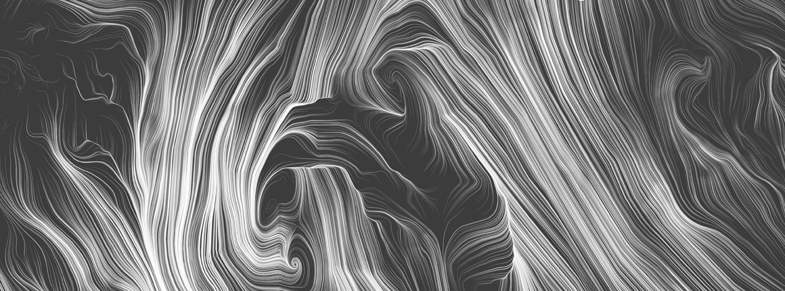

Syllabus

Learning objectives and outcomes
This course is meant to teach students basic concepts in computational generative art, and provide a foundation for creative self-expression via software. Students should come away with an appreciation for the opportunities in using data as a medium, as well as technical and ethical challenges. In addition, they should gain an understanding of the critique processBy the end of the course, students should have:
- Ability to create expressive graphical, interactive applications that can be deployed on the web, using either the p5.js environment or Javascript/HTML
- Ability to participate in the in-person critique process: assessing a composition, articulating useful criticism, and receiving feedback constructively.
- Ability to assess data quality and think critically about how data sets have been constructed and used. Ability to clean and prepare data.
- Familiarity with key concepts and themes of generative and data-driven artwork
Course Components
This is a studio course, following the tradition in design and art schools of learning by doing, and learning by critique. Given the nature of the class, students are likely to bring widely different backgrounds and perspectives to bear on the material; our teaching philosophy is that we want students to uncover their own strengths, and use those as building blocks for learning material that they may not otherwise have confidence to tackle.In class
The general structure of the class will be to introduce a new topic on Thursday, with a related homework exercise due the following Tuesday. We will spend much of that Tuesday on an in-class critique and discussion of the group's work.
Lectures Class lectures will introduce central concepts related to software-based art and data visualization. As a class, we will examine, analyze, and critique a variety of contemporary and historical pieces based on data and algorithms. We'll also spend time on craft: the technicalities of graphical coding and working with data.Critiques A core element of the class will be structured critiques of homework exercises. To be clear, we don't mean "critique" in the sense of making negative comments. Instead, a critique is a rigorous and intellectually curious examination of the work. Engaging in this process is not just an excellent way to deepen understanding of the subject at hand, but builds skills that are helpful in many other contexts.
Homework
Weekly compositions. Weekly homework assignments will usually consist of a series of prompts. Students will create a draft composition for each prompt, along with a brief paragraph describing their intentions. We'll go over these drafts in a group class critique. The list below should give a sense of what will be required, but during the semester we may modify some of these assignments to better fit class skills and interests.
Final project. Students will be expected to create a final project which synthesizes the main themes of the course and demonstrates mastery of the skills taught in lectures. The goal will be to make a rich, complete work that tells a story around data. The last two weeks of the course will be devoted to creating prototypes and drafts of the final project.
Topics covered
This is a conceptual list of topics. Please see the course schedule for precise dates of lectures, homework, etc.
Introduction
- Lecture topics Generative art. History and examples. The p5.js environment. Drawing on screen. Publishing a composition on the web.
-
Reading:
- All the "critique" readings on the resources page.
- Introductory material on the p5.js environment: P5.js Getting Started, P5.js Overview, and Active Drawing
Repetition, Systems, and Scale
- Lecture topics The power of repetition. Creating wholes from parts. How do you create a sense of scale on a laptop? Slides from Lecture 2.
-
Useful reading:
- Look at the MassMOCA Sol LeWitt exhibit site and watch this video about wall drawings.
- See Code as a Creative Medium pp. 379-387 for inspiration. Read this p5.js tutorial on looping
- Look through early chapters of Getting Started with p5.js (see Library Reserves on Canvas).
Color
- Lecture topics Color from an artistic and scientific perspective. Slides from Lecture 3.
-
Optional Reading:
- Josef Albers: interaction of color chapters IV, V, XXII. You should have access via Harvard to this material.
- Color scales: Wilke on color scales
- Color in P5.js
Animation: Time, change, and motion
- Lecture topics Parametrized position. Simple Javascript objects; particle animations. Traditional animation and its relation to computer graphics. Slides from Lecture 4
-
Reading:
- See Code as a Creative Medium pp. 413-416 for inspiration.
- Principles of Traditional Animation Applied to 3D Computer Animation, Lasseter.
- P5.js Classes and objects
- P5.js Animation dynamics
Interaction
- Lecture topics Reactivity and interactivity. Working with mouse and keyboard. Readings from Code as Creative Medium about interactive projects.
Data
- Lecture topics What do we mean by data? Data in today's society. Data ethics. Critical perspectives on data. Technical view of data: Excel / Google Sheets, Libraries to read data in p5.js. Readings from Living in Data and Design for Information.
Visually representing data
- Lecture topics Visually encoding data. Readings from Edward Tufte, as well as Living in Data and Design for Information. Utilitarian vs. artistic visualization.
Interacting with data
- Lecture topics Exploratory data analysis. Overview, zoom/filter, drill down for details. Brushing and linking. Readings from Shneiderman.
Clarity and mystery
- Lecture topics Art that uses data as input. Secret meanings. Readings: Code as Creative Medium.
Time and history
- Lecture topics Time-based visualization with animation. Reading: Online p5.js documentation.
Emotion in visualization
- Lecture topics Role of emotion in visualization. Rhetorical aspects of data presentation. Readings from Ignazio & Klein, Data Feminism.
Final project
- An assignment that brings together the threads of the course: a complete, interactive artistic visualization. Students will create a draft, show to the class in a critique, and then create a further iteration based on the critique. The precise details will be released midway through the course, as we get a sense of student skills and interest.